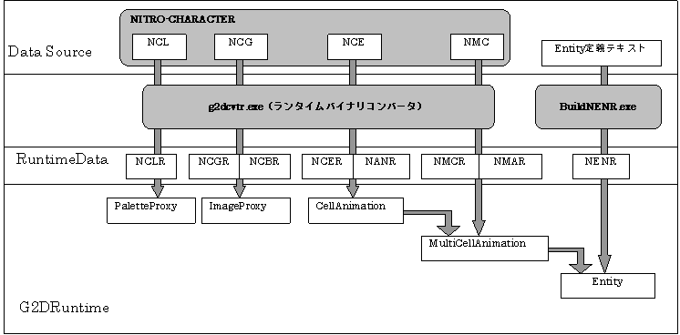
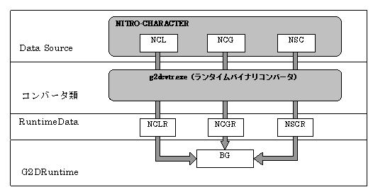

ランタイムバイナリファイル概要
概念図

説明
Ｇ2Dライブラリが用いるバイナリデータの種類と、その構造について説明します。
概念図に示されたデータはバイナリファイルの形でROMに格納し、必要となった時にユーザがメインメモリに読み出して、Ｇ2Dライブラリに設定します。
キャラクタデータ(.ncgr .ncbr ファイル)
キャラクタデータは、VRAMに格納される画像情報が格納されています。
キャラクタデータは、バイナリコンバータによりNITRO-CHARACTERバイナリの.ncgファイルから作成されます。
ランタイムバイナリに ncgr,ncbrの2種類のフォーマットが存在します。
2D グラフィックスエンジン での描画に使用する場合は、8×8画素ごとに画素が整列した、キャラクタフォーマット（ncgr）で出力する必要があります。
３D グラフィックスエンジン での描画に使用する場合は、
画素が元画像の画素ラインどおりに整列した、ビットマップフォーマット（ncbr）で出力する必要があります。
OBJ用のキャラクタデータには、1Dマッピング、2Dマッピングの2方式のマッピング方式が存在します。
マッピング方式によって、キャラクタの整列方法が異なります。
コンバータはマッピング方式に関する情報を取得するのにnceファイルが必要となる点にご注意ください。
BG用のキャラクタデータは2Dマッピング方式のみが存在し、nceファイルを必要としませんが、
コンバータはキャラクタデータがOBJ用かBG用かを判断する方法を持たないので、
-bgオプションを指定してコンバートを行うようにしていただく必要があります。
なお、nscファイル変換の際には、自動的に-bgオプションが指定されています。
カラーパレットデータ（.nclrファイル）
カラーパレットデータはグラフィックスエンジンに読み込まれる、
カラーパレット情報が格納されています。
バイナリコンバータによりNITRO-CHARACTERバイナリファイルの.ncl ファイルから作成されます。
アニメーションデータ（.nanr, .nmarファイル）
アニメーションデータは、セルアニメーションまたはマルチセルアニメーションが格納されたデータです。
アニメーションデータは、
NITRO-CHARACTERバイナリファイルの.nceファイルまたは
.nmcファイルのアニメーションシーケンスデータから作成され、
.nanr, .nmarという拡張子を持つバイナリファイルとして出力されます。
アニメーションデータは、変化するパラメータの種類に応じて、
複数のフォーマット種類を持ちます。
現在はセル（マルチセル）番号のみ、
セル（マルチセル）番号＋SRT（スケール、回転、平行移動）値、セル（マルチセル）番号＋T（平行移動）の3種類がサポートされています。
セルデータ（.ncerファイル）
セルデータは、セルデータのリストが格納されています。
セルデータは、バイナリコンバータによりNITRO-CHARACTERバイナリファイルの
.nceファイル内のセルリストから作成され、.ncerという拡張子を持つバイナリファイルとして出力されます。
VRAM転送アニメーションの際に必要となる情報も本ファイルに格納されます（コンバートの際に、-vtaオプションを指定）。
マルチセルデータ（.nmcrファイル）
マルチセルデータは、マルチセルデータのリストが格納されています。
マルチセルデータは、バイナリコンバータによりNITRO-CHARACTERバイナリファイルの.nmcファイル内のマルチセルリストから作成され、
.nmcrという拡張子を持ったバイナリファイルとして出力されます。
エンティティデータ（.nenrファイル）
エンティティデータは、複数のアニメーションシーケンス番号が格納されたデータで、
多数のアニメーションデータをグループ毎に分類し、管理し易くするために用意されています。
エンティティデータは、Entity定義テキスト情報からBuildNENR.exeによって変換され、.nenr、nmarという拡張子のバイナリファイルとして出力されます。
スクリーンデータ(.nscrファイル)

スクリーンデータはBGの表示に用いられるスクリーン情報が格納されています。
バイナリコンバータによりNITRO-CHARACTERバイナリファイルの.nscファイルから作成されます。
参照
なし
履歴
2004/12/06 初版